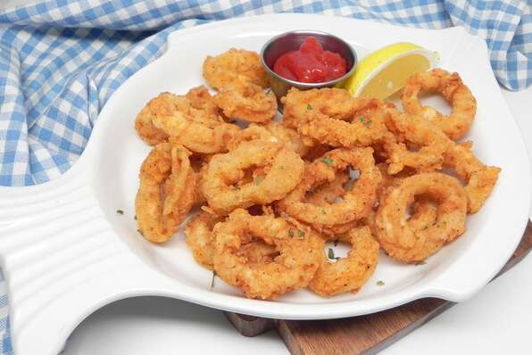

Fried Calamari

Calamari battered in a flour mixture, fried to golden perfection
Ingredients
- 1 pound of Calamari tubes, cleaned
- Oil for frying
- 6 cups of all purpose flour
- 4 eggs
- 1 teaspoon salt
- 1 tablespoon paprika
- 1 teaspoon ground pepper
- 1 wedge of lemon
Steps
- In a deep fryer or large saucepan, heat enough oil to 400 degrees F
- In a medium bowl, whisk eggs. In a seperate medium sized bowl, combine flour, salt, and paprika
- Toss calamari rings in eggs, then toss in the flour mixture until completely coated
- Submerge battered calamari in heated oil for 3-4 minutes, or until golden brown. Do this in batches to prevent overcrowding in the pan
- After removing calamari from oil, place on paper towels for oil to drip off. Serve with lemon wedge